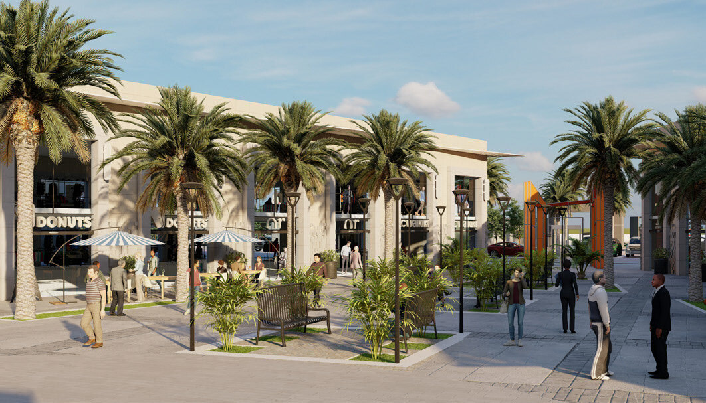
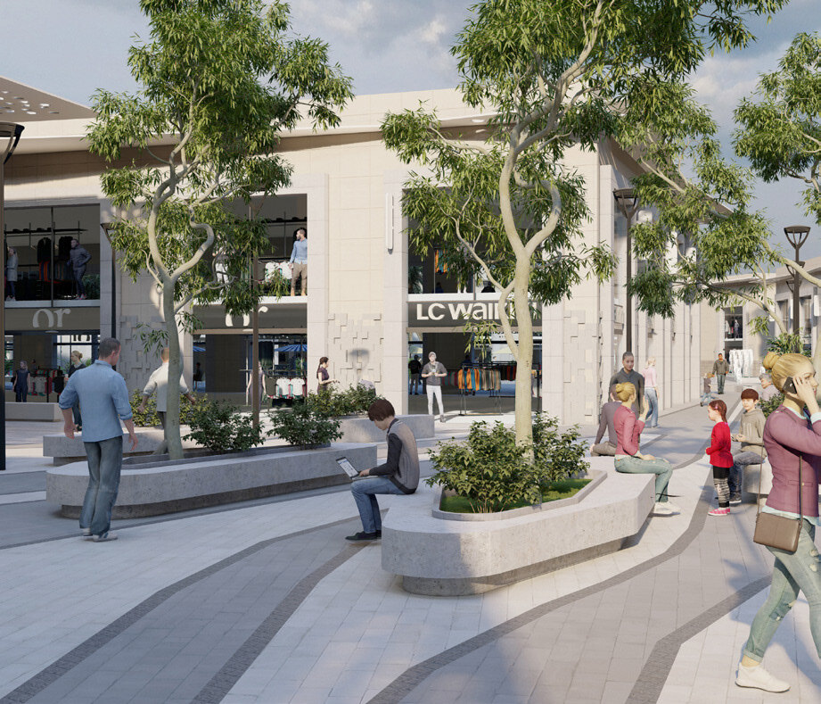
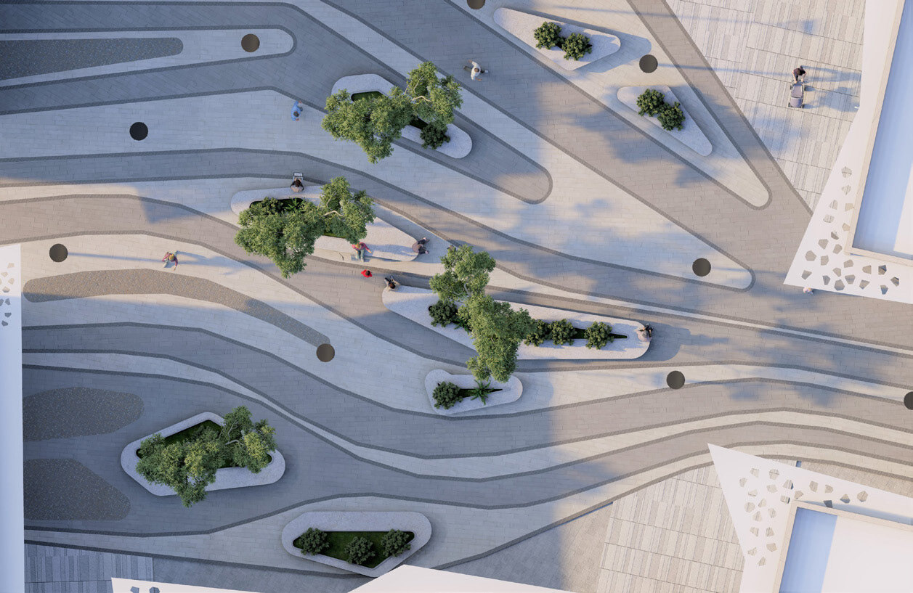
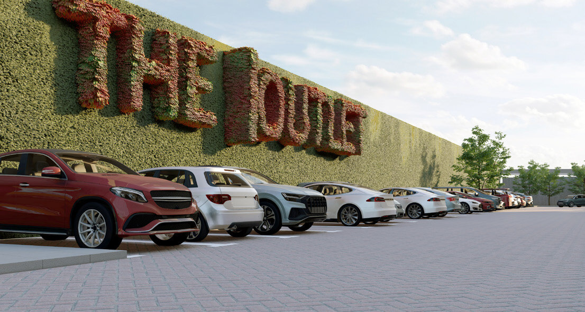

/ ADEC — RETAIL & URBAN DESIGN
The Outlet Village
An ADEC retail-village proposal for Cairo — a low-rise, open-air shopping destination of pitched-roof streets and landscaped plazas, planned around the pleasure of walking rather than the enclosure of a mall.
/ OVERVIEW
Shopping as a street, not a shed.
The Outlet Village trades the sealed box of a conventional mall for an open-air village of low buildings, pitched roofs and pedestrian streets. Shops line walkable lanes that open onto planted plazas, so the retail programme reads as a small town centre.
Landscaping, shade and human scale carry the design: the village is sized to be crossed on foot, with places to pause between the runs of shopfronts, and the roofscape kept low and varied so no single volume dominates.
These are the ADEC proposal renders. Replace this text with the project’s brief, area figures and credits when available.



